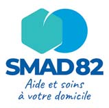
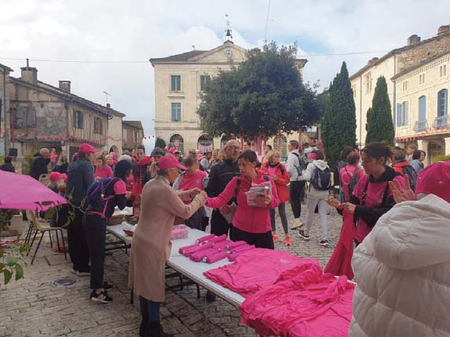
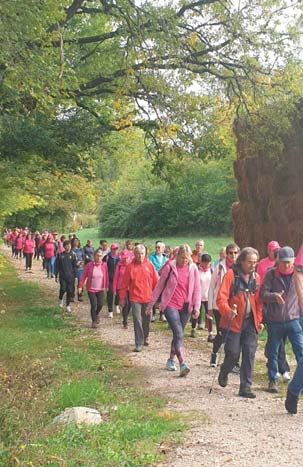

24 Associations ( ( ( NOUVEAU LOGO, MÊME ENGAGEMENT Dans le cadre de son développement et a�n de mieux re�éter ses valeurs, l’association SMAD 82 adopte un nouveau logo et modernise son identité visuelle. À compter du 1 er juin 2026, le SMAD 82 devient un Service d’Autonomie à Domicile (SAD) mixte, c’est- à-dire combinant accompagnement à domicile et prestations de soins, dans le but de mieux répondre aux besoins de ses béné�ciaires. Le nouveau logo sera apposé sur l’ensemble des supports de communication de l’association, attestant de son identité renouvelée et de son dy- namisme sur le territoire. SMAD82 Service de Soins In�rmiers A Domicile Pôle médical SIS 21, avenue du 2 mai 1944 82270 Montpezat de Quercy � 05 63 66 65 65 � contact@smad82.fr. /. www.smad82.fr SMAD 82 La préparation de l'édition 2026 d'Octobre Rose est lan- cée. Nous sommes mobilisées pour que ce rendez- vous solidaire et convivial soit à nouveau une belle réussite. Cette année, nous nous retrouverons : 4 le dimanche 04 octobre, place de la mairie, à partir de 9 heures. Deux marches sont prévues : une de 8,5kms et l 'autre de 5kms. Par ailleurs une visite du vil- lage est prévue pour celles et ceux qui ne peuvent marcher trop longtemps 4 le vendredi 16 oc- tobre au soir , à partir de 19 heures pour une marche noc- turne aux �ambeaux. Ce sera le soir des vacances scolaires de la Toussaint, aussi espèrons nous la présence de beaucoup d'enfants. Le professeur Fabre et le docteur Mony Ung sont venus le 13 novembre 2025 au Faillal. Le 1 er nous Octobre Rose Octobre Rose a présenté l Oncopole, le second, spécialisé dans la re- cherche, nous a présenté les principales avancées sur les diagnostiques et thérapeutiques dans les cancers du sein. Vous avez été nombreux à assister à cette soirée au cours de laquelle nous avons pu remettre, grâce à votre partici- pation et vos dons, un chèque de 4500 euros. Alors un grand MERCI à toutes et tous. Et nous vous donnons rendez-vous le 04 octobre. Venez nombreux. S.Lebrun association Quercy Rose